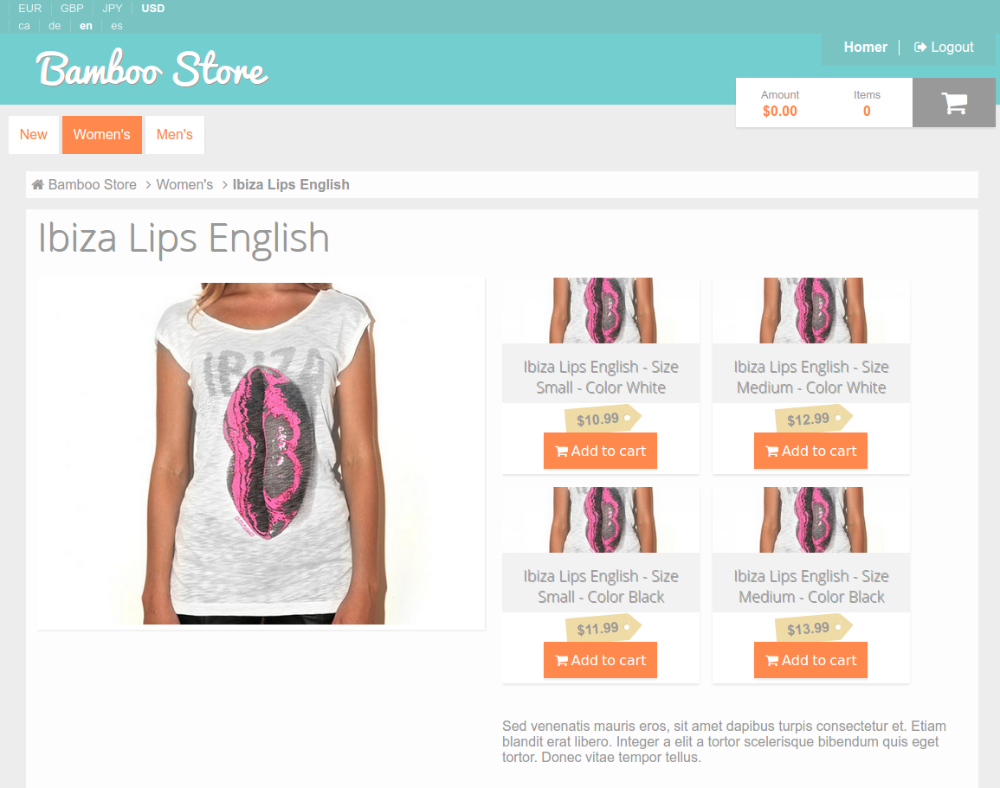

Processes #
In this chapter you will find a set of Bamboo processes. A process is just a page loaded or a specific action from an already loaded page.
Each entry of this chapter has the same predefined format, taking in account that all links work having a clean Bamboo installation listening to http://localhost:8000
Given - Initial environment and requirements
When - Our elemental action
Then - Actions ocurred because of that previous actions. Sent emails and
important dispatched events are described here as well.
In each scenario, we'll provide as well some nice sections for you to know a little bit more about it.
- Events dispatched - Events dispatched by the symfony component or any Elcodi components
- Email sent - Emails sent by the application during this action
- Related links - Interesting links to know a little bit more about the scenario
- Nice improvements - Small tips about how to improve the scenario.
Load any page #
All pages have a common set of elements described as follows. All elements belong to the application, so they are applicable to all web requests.
Given - As a user, no matter the credentials
When - We want to visit any application page
Then - These actions happen
- Request is handled by the Bamboo application, on top of the Symfony Framework, Symfony components and Elcodi components.
- The user is loaded by using the session information
- The user credentials are checked and analyzed in order to find authentication and authorization information.
- If the user can visit the page, then the response is created and served to the user.
- Otherwise, you'll receive a redirection to login page
- Some user related information is loaded from database
- Some language related information is loaded from database, taking in account the user or using stored-in-session data
- Some currency information is loaded the same way than language
- The request is processed

Related links
Load the home page #
The main page, or home page, is always treated as a simple category page, having
that the way of retrieving the products is by filtering by the field inHome.
Given - As a user, no matter the credentials
When - We visit the home page, http://localhost:8000
Then - We can see the N first products

Load the product page #
The product page is one of the most important landing pages in the whole e-commerce project. You will find all product related information and all the needed buttons for adding the product in your Cart.
Given - As a user, no matter the credentials
When - We visit a product without variants page
Then - All the product information is reached from the database and shown in
a single page. Because the product has no variants, you can add this product in
your cart by pushing the add to cart button.

Related links
Improvements
- As soon as your website has any search service (Like elasticsearch or Solr), all product-related data should be required from there instead of using database. To do that, you should save all needed information in the search server in order to avoid sql connection
Load the variants page #
In this case, the product we're loading has variants, so the product itself is only the master of different product variations (see related links). The meaning of this page is the same than the product one, but in this case, we will load as well all the variants information.
Of course, each variant
Given - As a user, no matter the credentials
When - We visit a product with variants page
Then - All the product information is reached from the database and shown in
a single page. Each variant will provide you the information about adding it
into cart, considering each variant as a product with some defined values.

Related links
Load the category page #
Just a search page, filtering by categories
Given - As a user, no matter the credentials
When - We want to see all products from a category, http://localhost:8000/category/women-shirts/1
Then - This page has the same behavior than the home page, but filtering by
category.

Related links
Register #
Register a new user in the application.
Given - As a not logged non registered user
When - We want to register, http://localhost:8000/register
Then - once added our basic and needed information, and pressed the
register button, a new user is added into the database. Is important to know
that our stored password is never saved plain and decrypted. We use BCrypt for
that reason.

Events dispatched
Sent emails
Related links
Login #
Login in the application
Given - As a not logged non registered user
When - We want to log in, http://localhost:8000/login
Then - once added our basic and needed information, and pressed the
login button, the system checks that given user exists in database and that
given password and stored one is the same. If they are, then the user is
authenticated in current session and allowed to access into the private zone.
Otherwise, the user is redirected to the same page with relevant errors.

Related links
Logout #
Logout from the application
Given - As a logged user When - We want to log out from the website, http://localhost:8000/logout Then - Once we decide to logout, we only need to remove the session credentials and the Symfony Security Component will do the rest.
Related links